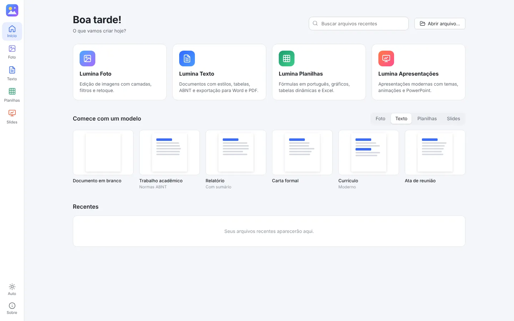
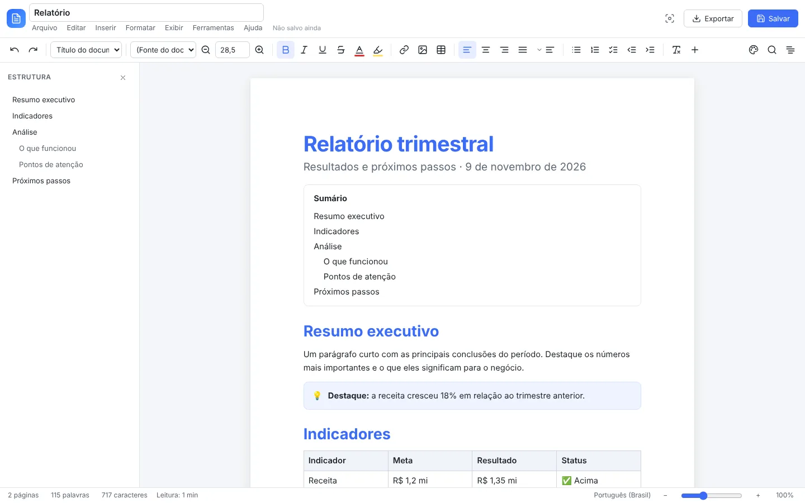

Lumina Texto
- Estilo de documento com um clique, incluindo ABNT
- Comandos com “/” e atalhos Markdown
- Sumário automático, histórico de versões e modo foco
- Cabeçalho, rodapé, notas e exportação para PDF
O Lumina Studio reúne um editor de imagens com camadas, um editor de texto, planilhas com fórmulas em português e apresentações modernas. Ele abre e salva arquivos do Word, do Excel e do PowerPoint.
Versão mais recente no GitHub

Troque de um para outro sem fechar nada. Seus arquivos continuam abertos.

Abra o arquivo que você recebeu, edite e devolva no mesmo formato.
Mantém fontes, cores, listas, tabelas mescladas, imagens, notas de rodapé, cabeçalho e rodapé.
Mantém fórmulas, cores de tema, formatação condicional, validações, notas, gráficos nativos e o VBA dos arquivos com macros.
Mantém layouts, temas, textos, formas, imagens, tabelas, gráficos, anotações e transições.
Escolha o seu sistema. Todos os downloads vêm do GitHub.
Prefere ver todas as versões? Lista de versões no GitHub · Código-fonte
O aviso aparece porque o programa ainda não tem assinatura digital paga. Clique em Mais informações e depois em Executar assim mesmo. Todo o código é aberto e o instalador é gerado automaticamente pelo GitHub a partir dele.
Arraste o Lumina Studio para a pasta Aplicativos. Depois clique nele com o botão direito, escolha Abrir e confirme. No macOS 15 ou mais novo, vá em Ajustes do Sistema › Privacidade e Segurança e clique em Abrir mesmo assim. Se aparecer que o app está “danificado”, rode no Terminal:
xattr -cr "/Applications/Lumina Studio.app"
Dê permissão de execução e abra:
chmod +x LuminaStudio-Linux.AppImage ./LuminaStudio-Linux.AppImage
Não. Tudo funciona offline e seus arquivos ficam só no seu computador.
O instalador cria atalhos no menu Iniciar e na área de trabalho e associa os arquivos do Lumina ao programa. A versão portátil é um único arquivo que roda direto, sem instalar nada.
As macros do Lumina rodam isoladas, sem acesso à internet nem aos seus arquivos, e só quando você manda. Macros VBA de arquivos .xlsm não rodam automaticamente: você pode ver o código e convertê-lo para uma macro Lumina.